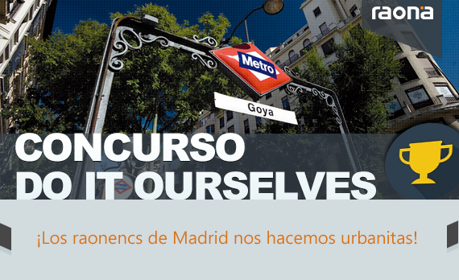

Queremos contar contigo para construir un nuevo espacio que nos represente y que atraiga todas las miradas.
En raona vamos a premiar a gente como tú, apasionado por la tecnología, con espíritu innovador y creativo… por eso, nos gustaría que nos ayudaras a definir y crear el nuevo espacio de trabajo al que nos vamos a mudar.
El concurso se realizará de julio a diciembre de 2015 ¿te apuntas? Sigue leyendo las bases del concurso y apúntate enviando un mail a Miriam (miriam.vilella@raona.com) antes del lunes 27 de julio a la reunión de presentación del concurso que haremos próximamente.
Queremos empezar a transformar la nueva oficina desde el primer día y que poco a poco vaya adquiriendo nuestra personalidad, con un toque gamberro ¿por qué no?
Nos gustaría premiar a los participantes que sean capaces de aportar mayor creatividad e ilusión, con pequeños detalles, subscripciones a Spotify o incluso algún gadget de última generación… está al alcance de tu imaginación ;)
1. Aporte de ideas, en este período cualquier raonenc podrá enviar sus ideas al comité. El período de recogida finalizará el 15 de septiembre. Descarga aquí la ficha y envíala completada a esta dirección: miriam.vilella@raona.com
2. Ejecución de ideas, posibilitando al participante definir y ejecutar una idea aprobada por el comité, pudiendo incluso construirla con sus propias manos.
Compartiremos un Pinterest (que facilite la compartición de imágenes) con los participantes.
· Trasgresión/gamberrismo, elementos que provoquen una disrupción al entrar en la nueva oficina.
· Sostenibilidad, elementos de decoración basados en el reciclaje que fomenten la sostenibilidad global.
· Tecnología, elementos de decoración de concepción tecnológica.
Corporativo
22 JUNIO
¡Concurso Nueva Oficina! 32
